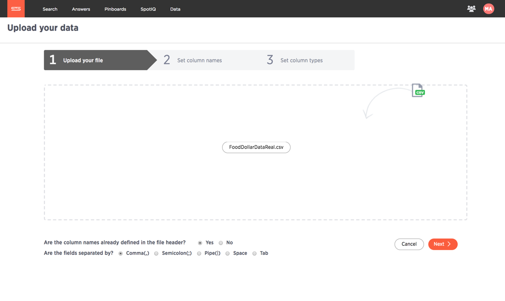
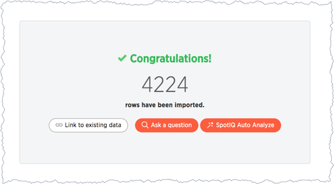

SpotIQ 101: Load and analyze data
This 101 walks you through a few simple, SpotIQ workflows. When you have completed the walkthrough, you will be able to use the core features of SpotIQ in your ThoughtSpot installation.
If you want a detailed overview of what SpotIQ does before you try it out, first link:{{ site.baseurl }}/spotiq/whatisspotiq.html[read the introduction to SpotIQ].
Prerequisites
Before you begin, make sure you can sign in to the ThoughtSpot application. To complete this tutorial, you need the ability to upload a CSV file and use the SpotIQ application. These features require that your user account has the following privileges:
-
Can upload user data
-
Has Spot IQ privilege
Your ThoughtSpot administrator can give you these privileges. If you can see the SpotIQ option on your ThoughtSpot dashboard, you have access to SpotIQ:
Get the sample data and some insights
You can use SpotIQ with any of the data in your system.
This tutorial uses a dataset containing a list of sales and movement data by item and department.
-
Download the link:{{ site.baseurl }}/downloads/FoodDollarDataReal.csv[FoodDollarDataReal] CSV file.
-
Save or move the file to a place on your local drive.
Upload the data
-
If you haven’t already, sign in to the ThoughtSpot application and click the Data tab.
-
Click the ellipses icon
 , and select Upload data.
, and select Upload data. -
Browse to the sample data file you downloaded or drag the file into the upload area.
-
Choose
Yesfor the Are the column names already defined in the file header? setting. -
Choose
Commafor the Are the files separated by? setting. -
Click Next to go to the Set column names page.
-
Set the category_num column to TEXT on the Set column types page.
-
Click Upload.
ThoughtSpot presents you with a few choices.
 -
Choose SpotIQ Auto Analyze to build SpotIQ insights.
Building insights can take time. How long depends on the data you are analyzing. The ThoughtSpot application displays an informational message. The message disappears after a moment.
Work with the INSIGHTS list
Each time SpotIQ does an analysis, it generates a set of results. ThoughtSpots keeps the results until the user that requested the analysis (or an admin), deletes them. You can run SpotIQ on the same object multiple times. Each analysis generates new results.
-
To check for the results of your analysis, go to the SpotIQ page.
The SpotIQ page allows you to see all results with data you have permission for. So the results lists shows All results or just Yours.
-
Select Yours.
-
Look for results from your FoodDollarDataReal data.
SpotIQ labels each result with a NAME, DESCRIPTION, STICKERS, and MODIFIED. The NAME comes from the object that was analyzed which is referenced again in the DESCRIPTION. The combination of NAME, DESCRIPTION, and MODIFIED is unique.
-
Take a minute and review the DESCRIPTION and MODIFIED time.
Not every SpotIQ analysis creates results. You can see information about each analysis as well as the results.
-
Click the Analyses tab at the top of the page.
Check the STATUS and also how long the RESULT took to generate. Since you got results, you can see that the analysis succeeded.
-
Select the Analysis for FoodDollarDataReal and choose Delete.
The information disappears from the Analyses list.
-
Choose Results.
You should still see the results for your FoodDollarDataReal run. Deleting information about an analysis run does not delete the actual results. You must delete each individually.